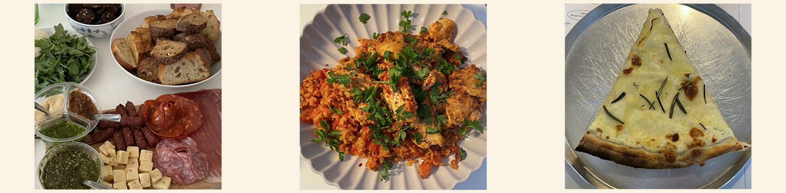

MAD GLAD
Kender du det? Den truende kedsomhed, der pludselig griber fat i dig og skriger efter noget lækkert at spise?
Velkommen til et sted, hvor vi udforsker den utrolige verden af snacks og madlavning som en modgift mod kedsomhed."MAD GLAD" inviterer dig til at træde ind i et univers fyldt med spændende smagsoplevelser, kreative opskrifter og spændende indsigter i, hvordan du kan forvandle kedelige øjeblikke til kulinariske eventyr.
Vores mission er at inspirere dig til at opleve nye smagsoplevelser og skabe lækre snacks, der hjælper dig med at bekæmpe kedsomhed på en sjov og velsmagende måde.
Uanset om du søger idéer til sundere snacks, ønsker at forvandle dine kedsomhedsspiserier til gastronomiske mesterværker eller bare er nysgerrig efter at udforske kulinariske eventyr, er siden her, for at guide dig.
Træd ind i vores verden af smagsoplevelser, opskrifter og køkkenkreativitet, og lad os sammen udforske, hvordan vi kan gøre kedsomhed til den perfekte undskyldning for at prøve nye retter og smagsoplevelser.
MEN HUSK ALTID PÅ:
Kedsomhedsspisning... Vi har alle gjort det, og det vil ikke gøre dig betydelig skade en gang imellem, men hvis du føler, at du aldrig rigtig er sulten-sulten, så er det nok på tide at genoverveje, hvornår, hvad og hvorfor du spiser.